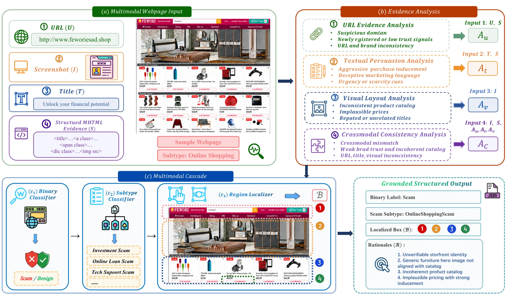
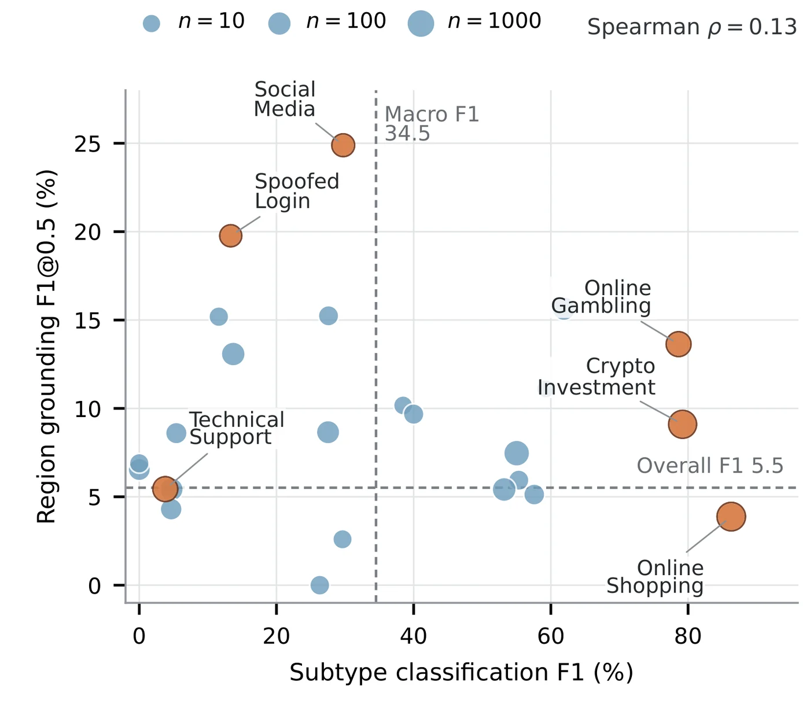

AAAI 2027
ScamWeb
A Multimodal Benchmark for Grounded Understanding of Cyber-enabled Fraud Webpages
Each scam page arrives with its URL, its title, a full-page screenshot and an audited MHTML archive. On 3,416 of them, domain experts boxed the deceptive regions and wrote down why. A model has to say whether the page is a scam, which of 25 subtypes it runs, where the evidence sits and what it shows.
- 1Unverifiable storefront identity
- 2Generic furniture hero image not aligned with catalog
- 3Incoherent product catalog
- 4Implausible pricing with strong inducement
- Binary label
- Scam
- Scam subtype
- Online Shopping Scam
- Localized boxes
- 4 regions, 4 rationales
5,658
pages in the frozen benchmark
3,416
scam pages annotated by experts
2,242
benign pages
25
scam subtypes
5,489
expert evidence regions with rationales
47
language labels
Screenshots from Figures 1, 2 and 4 of the paper. Scam URLs in this page’s own text are defanged and never linked.
Fraud webpages are built to pass as legitimate.
Public fraud datasets mostly cover phishing or brand impersonation and label whole pages. ScamWeb asks how a page deceives: which scheme it runs, which regions carry the deception, and why those regions matter.
$20.9B
U.S. cybercrime losses reported in 2025, with cyber-enabled fraud accounting for more than 85% of the total.
FBI Internet Crime Complaint Center, 2025 Internet Crime Report
$442B
Estimated global losses to scams in the same year.
Global Anti-Scam Alliance and Feedzai, Global State of Scams 2025
Scam pages are short-lived: many disappear before anyone can collect them. ScamWeb captures each live page as a full-page screenshot and a single-file MHTML archive, and recovers dead ones from the Internet Archive, so the evidence outlives the site.
Representative datasets for cyber-enabled fraud
full supportpartial supportnot available
Table 1 of the paper. Numbers in brackets count languages or subtypes. ScamWeb is the only dataset with region annotations.
Collected live, recovered from the archive, annotated by experts.
From roughly 100,000 candidate URLs to a 5,658-page frozen benchmark. Every kept page has a full-page screenshot and a single-file MHTML archive, so its visual appearance and DOM survive the site going offline.
-
Sources
6
public source types
- Official blacklists
- Community reports
- Security vendor feeds
- Social media
- Public datasets
- NGO disclosures
-
Candidates
≈100K
candidate URLs collected between 2025-11-30 and 2026-02-26
-
Capture
10,041
webpages accessible or recoverable, each archived as a screenshot and an MHTML file
4,693 recovered through the Internet Archive Wayback Machine
-
Verification
7,784
unique fraudulent webpages after manual verification and domain-level deduplication
-
Annotation
3,416
annotated independently by two domain experts; a third resolves disagreements
4,368 machine-annotated pages stay outside the frozen benchmark
+2,242 benign pages from LegitPhish
Bars share one linear scale.
What the collection contains
- 3,416 scam pages, expert-annotated
- 2,242 benign pages
- 4,368 scam pages, machine-annotated (auxiliary)
The red and black arcs form the 5,658-page frozen benchmark.
47 language labels
Single languages and multilingual combinations across the expert-annotated pages.
One to four evidence regions per page
5,489 expert boxes over 3,416 scam pages, each with a human-written rationale.
Where the evidence lives
Text (URL)
Phishing; Website Hijacking Scam; Business Impersonation Scam
Text (title)
Fake News Website Scam; Technical Support Scam; Lottery / Prize Scam
Vision
Online Shopping Scam; Cryptocurrency Investment Scam; Online Investment Scam; Online Gambling Scam
Text–vision
Task-Based Commission Scam; Romance Scam; Sextortion; Fake Streaming Service Scam
Code (MHTML)
Spoofed Login Page; Bank Impersonation Scam; Online Loan Scam
Grounding target
Vision: deceptive screenshot regions as bounding boxes. Text: an expert rationale for each region.
Table 2 of the paper: representative scam types by the modality that carries their evidence.
Browse the records in the dataset viewerOne webpage, four views, one answer key.
A record is x = (I, U, T, S): the full-page screenshot, the URL, the page title, and trusted content extracted from the archived MHTML. Scam pages add a subtype and a set of evidence regions, each a box in screenshot coordinates paired with a rationale.
x = (I, U, T, S)
(y, c, G) = (1, c, {(bj, rj)}j=1N) if x is fraudulent(0, ∅, ∅) otherwise
y is the binary label, c one of 25 subtypes, bj a box in screenshot coordinates (xmin, ymin, xmax, ymax) and rj its expert rationale.
Quality control
- No leakage. Benchmark metadata, ground-truth labels, boxes and rationales never enter model inputs.
- Geometry checks. Every annotation box is validated for geometric consistency.
- MHTML audit. An independent audit checks each archive against the captured page. Only verified archives, or ones with explainable redirects, become model input.
- 5,482 pages with trusted MHTML evidence
- 161 archive mismatches
- 15 missing or corrupt archives
All 5,658 records stay in the evaluation. The 176 untrusted archives are withheld from model input only.
GroundScam: four linked tasks, one prediction.
For every page a model predicts (ŷ, ĉ, Ĝ). The tasks are coupled: a page judged benign gets no subtype and no evidence, so an early mistake propagates.
-
i
Fraud detection
Output: scam or benign
Accuracy, precision, recall, F1
-
ii
Subtype classification
Output: one of 25 subtypes
Accuracy, macro precision, macro recall, macro F1
-
iii
Evidence grounding
Output: regions in screenshot space
mIoU, P/R/F1 at IoU 0.5, page recall at 0.3 and 0.5
-
iv
Rationale generation
Output: an explanation per region
ROUGE-L, multilingual BERTScore, grounded coverage
The grounding panel illustrates the IoU criterion with moving boxes; the readout is the live IoU of the two boxes drawn.
ScamDet reads the page four ways, then decides in stages.
A training-free LLM–VLM baseline. Four analysis modules examine the URL, the persuasive text, the visual layout and their cross-modal consistency. A cascade then detects, classifies, grounds and explains. GPT-4o-mini runs URL and textual analysis; Qwen3-VL-Flash runs visual analysis and downstream reasoning, at temperature 0 with Qwen reasoning disabled.
Inputs
U URLT titleI screenshotS MHTMLAnalysis modules
Au URL evidence
GPT-4o-mini · reads U, S
- Suspicious domain
- Newly registered or low-trust signals
- URL and brand inconsistency
At Textual persuasion
GPT-4o-mini · reads T, S
- Aggressive purchase inducement
- Deceptive marketing language
- Urgency or scarcity cues
Av Visual layout
Qwen3-VL-Flash · reads I
- Inconsistent product catalog
- Implausible prices
- Repeated or unrelated titles
Ac Cross-modal consistency
Qwen3-VL-Flash · reads I, S, Au, At, Av
- Cross-modal mismatch
- Weak brand trust, incoherent catalog
- URL, title and visual inconsistency
Cascade
Stage 1
Fraud detection
ŷ ∈ {0, 1}
Stage 2
Subtype
ĉ ∈ {1, …, 25}
Stage 3
Evidence grounding
boxes on full-page and cropped views, mapped back to the screenshot
Stage 4
Rationales
one per predicted box
Output
Ô = (ŷ, ĉ, Ĝ)
If ŷ = 0 the cascade stops: ĉ = ∅, Ĝ = ∅.

Animation: the page passes all four stages.
The code repository implements ScamDet as the scammark Python package.
Detection is largely tractable. Grounding is not.
ScamDet on the full benchmark, zero-shot. It flags almost every scam page, yet its boxes rarely match the experts’: 0.173 mIoU and 5.5% F1 at IoU 0.5.
Fraud detection 5,658 pages
- Accuracy
- 68.3
- Precision
- 66.1
- Recall
- 97.2
- F1
- 78.7
Subtype 3,416 scam pages
- Accuracy
- 63.7
- Macro P
- 52.2
- Macro R
- 37.4
- Macro F1
- 34.5
Grounding 3,416 scam pages
- mIoU
- 0.173
- P / R @0.5
- 3.5 / 12.4
- F1 @0.5
- 5.5
- Page R @0.3 / 0.5
- 23.5 / 14.5
Rationales IoU-matched regions
- ROUGE-L
- 13.4
- BERTScore
- 87.6
- Coverage
- 12.4
Percentages except mIoU. Full-benchmark run reported in Tables 3 and 4 of the paper.
5,658 pages, one square each.
Colour is the truth, fill is ScamDet’s call. It catches 3,321 of the 3,416 scam pages, but it also flags 1,700 of the 2,242 benign ones. Recall is 97.2; precision is 66.1.
- 3,321 scam pages flagged
- 95 scam pages missed
- 1,700 benign pages flagged
- 542 benign pages passed
95% bootstrap intervals: accuracy 67.0–69.4, precision 64.7–67.4, recall 96.7–97.8, F1 77.7–79.6 (Table 7 and Supplementary E.1).
Task-specific phishing detectors (Table 3) reach higher binary accuracy, but they are built for phishing detection alone; ScamDet also classifies subtypes, grounds evidence and explains.
Against eight frontier models
Zero-shot, single-model comparison on the 3,324-page scam subset (Table 5). Choose a metric; the bars re-sort.
Full Table 5
Valid = valid structured output rate; scam R = scam recall; tokens in millions (total) and per page. Bold marks the best value in each column.
Naming the scheme is not finding the evidence.
Across the 25 subtypes, subtype F1 and grounding F1 barely move together (Spearman ρ = 0.13). Online Shopping Scam reaches 86.3 subtype F1 but 3.9 grounding F1; Social Media Scam and Spoofed Login Page ground better than they classify.
Marker area scales with log(1 + N). Dashed lines: macro subtype F1 34.5 and overall grounding F1 5.5. Values from Tables 8 and 10.

19,173 predicted boxes, 680 matches.
Expert boxes
5,489 680 matched, 4,809 missed
Predicted boxes
19,173 680 matched, 17,660 unmatched, 833 invalid
Matches at IoU 0.5 in the end-to-end run (Table 9). Invalid boxes count as false positives, so the 18,493 false positives include all 833. Bars share one scale.
Where it goes right, and three ways it goes wrong.
Four cases from Figure 4 of the paper. Blue solid boxes are expert annotations; orange dashed boxes are ScamDet predictions.
Three recurring challenges
- Deceptive webpages closely mimic legitimate visual conventions.
- Semantically related fraud subtypes share much of their vocabulary.
- Predicted evidence regions often differ from expert annotations in spatial granularity.
Browse the records, or stream them without downloading 29.73 GB.
The Hugging Face release holds the 5,658-page benchmark in the samples configuration and supporting annotation files in artifacts, both under the full split: 79 Zstd-compressed Parquet shards, about 29.73 GB, with original media stored as bytes. A 1 MB preview configuration repeats the records’ text fields for the viewer below.
The official Hugging Face viewer, loaded from huggingface.co. It shows the preview subset: the metadata and expert annotations of all 5,658 records, scam pages first. Screenshots and MHTML archives live in samples. Scam URLs appear there as plain text: open them only inside an isolated research environment.
# pip install datasets
from datasets import load_dataset
pages = load_dataset(
"kirco567/ScamWeb-Dataset", "samples", split="full", streaming=True
)
page = next(iter(pages))
print(page["sample_id"], page["category"])git clone https://github.com/Kirito14IT/ScamWeb.git
cd ScamWeb
python3.12 -m venv .venv
source .venv/bin/activate
python -m pip install --upgrade pip
python -m pip install -e .# unit suite with fake clients: no paid API calls
python -m unittest \
tests.test_scammark \
tests.test_scamweb_dataset \
tests.test_scammark_evaluation \
tests.test_paper_baselines
# Full-V2 preflight (Linux): checks the frozen inputs, issues no API requests
python -m scammark.run_experiment \
--config configs/qwen3_dashscope_server_full_v2.toml \
--full \
--validate-onlysamples- 5,658 rows: metadata, screenshot, MHTML and expert annotations
artifacts- 7,845 rows: machine annotations, collection workbook, annotation documentation
preview- 5,658 rows: the records’ text fields and expert annotations, 1 MB, for browsing
- Supervised split
- Fixed 70 / 15 / 15 partition, versioned in the code repository
- Reproducibility
- Seed 2027, temperature 0, hashed prompts and inputs, checkpointed API stages
- Licenses
- Code under Apache-2.0; dataset terms on the Hugging Face dataset card
Handle with care
- ScamWeb is intended solely for defensive research on cyber-enabled fraud.
- Scam pages may contain deceptive, explicit or otherwise harmful content. Never open collected MHTML as trusted local content; process raw pages in an isolated research environment.
- Automated detection produces false positives, notably for legitimate niche or minority-owned businesses. Deployments need human review and subgroup evaluation across languages.
Cite ScamWeb.
@inproceedings{wang2027scamweb,
title = {ScamWeb: A Multimodal Benchmark for Grounded Understanding of Cyber-enabled Fraud Webpages},
author = {Wang, Zhihua and Li, Nan and Chen, Ziyang and Feng, Yunhao and Wu, Songyang},
booktitle = {Proceedings of the AAAI Conference on Artificial Intelligence},
year = {2027}
}